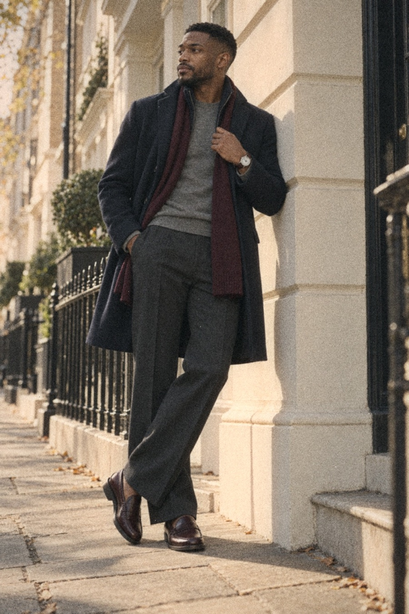
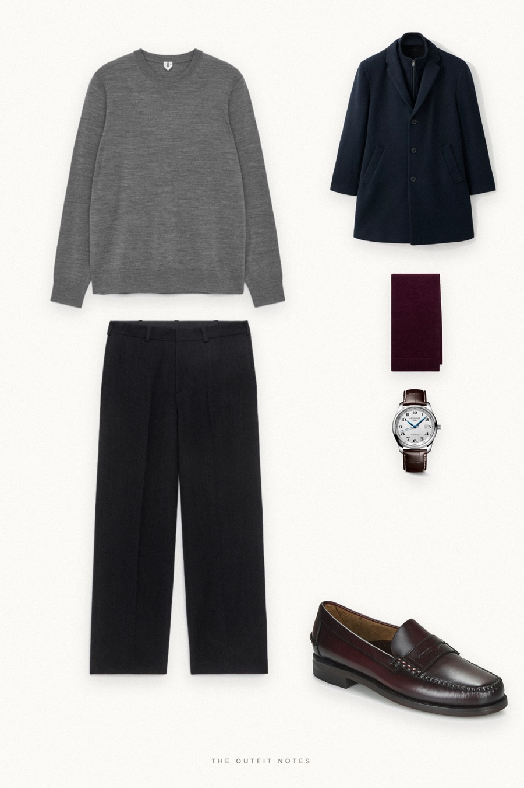
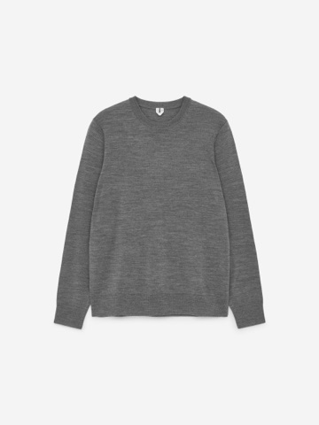
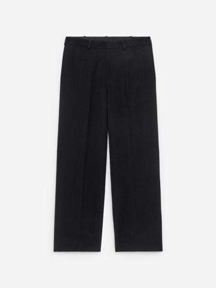
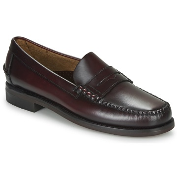
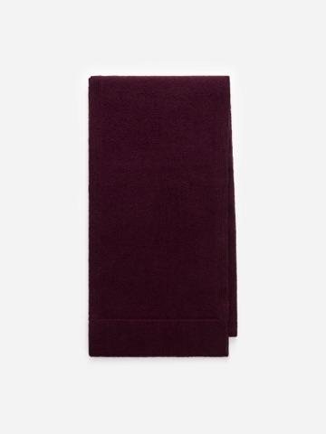

London Oxblood
navy coat, burgundy accents


Old money outfits for men start with a navy Mango wool coat over an ARKET grey merino jumper and charcoal loose-fit wool trousers. Sebago Classic Dan burgundy loafers and a burgundy ARKET wool scarf add the single accent, finished with a Longines Master Collection watch. A quiet luxury fall outfit men can wear daily.
The pieces
This page contains affiliate links: if you buy through them, we may earn a commission at no extra cost to you. Disclosure.
 Mango
Mango
Navy wool coat
Shop
ARKET
Grey fine-knit merino jumper
Shop
ARKET
Charcoal loose wool trousers
Shop
Sebago
Burgundy boat shoes
Shop
ARKET
Burgundy wool scarf
Shop Longines
Longines
Silver dial dress watch
Shop
Prices are indicative, taken when the look was published, and may have changed. Pictures of the outfit are AI-generated illustrations of real products; the product photos are the retailers' own.
Published 1 October 2026.